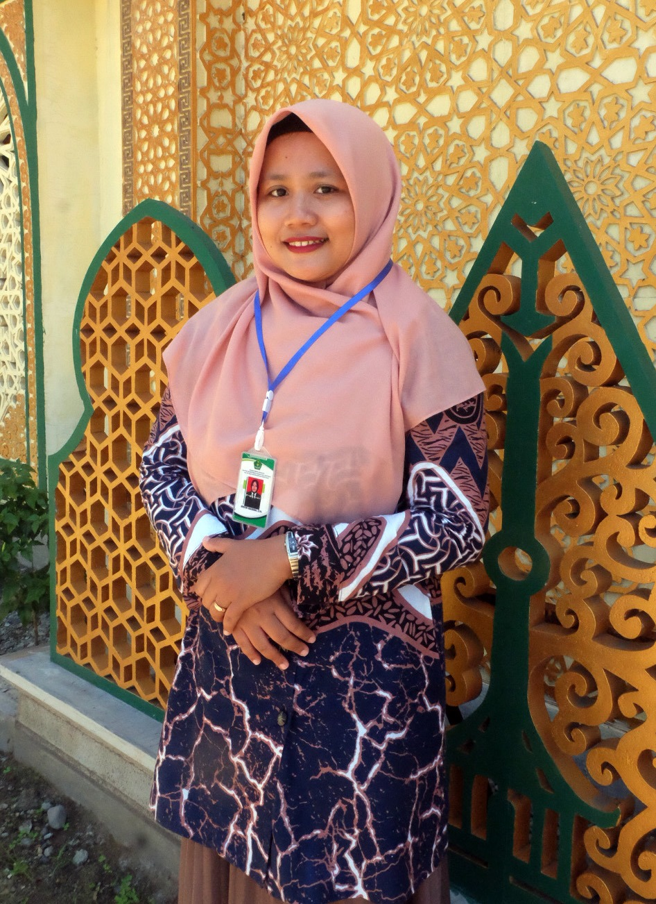

| H o m e | Visi Misi | Jurusan | Guru | PPDB
Guru MA VIP IQ NU Keterampilan Banyumas Muslimin. M.Pd Nofia Robiyatun S.Pd Beliau guru yang bergelar S.Pd, menempuh pendidikan S1 si Universitas Soedirman Purwokerto. Beliau menjadi Wakil Kurikulum semenjak awal berdirinya MA VIP IQ NU Keterampilan Banyumas sampai dengan sekaran ini. Beliau guru muda tetapi sudah dapat menjadi panutan untuk guru - guru yang lainnya.Selain menjadi guru bahasa, beliau juga pandai menari sehingga sangat memotivasi siswa yang mempunyai bakat menari untuk mengembangkan bakatnya.DAFTAR GURU DAN STAF
Kepala Sekolah
Wakil kurikulum dan Guru Bahasa
Kesiswaan dan guru ahli IPA

Rifatun Khasanah, S.Pd
Satu kata motivias dari beliau : " Jangan takut untuk mencoba. Karena tidak ada keberhasilan tanpa perjuangan dan tidak ada Pengambilan langkah tanpa resiko." Beliau menjadi guru IPA yang sangat digandrungi oleh siswa - siswanya. Ibu anak satu ini masih berjiwa muda yang mampu menyalurkan semangatnya kepada para siswa - siswanya.
Sarpras dan Guru Keagamaan

Anton Nur Rakhman, M.Pd
Beliau satu - satunya guru laki - laki dan satu - satunya guru yang mempunyai gelar M.Pd. Beliau mengampu mata pelajaran dalam bidang keagaamaan. Misalnya Fiqih, Qur'an Hadits dll.
Penanggung Jawab Lab dan guru Informatika

Lativah, S.Kom
Selain mengajar Ibu Lativah, S.Kom ini bertanggung jawab mengelola Lab Komputer. Lab Komputer tidak hanya digunakan untuk siswa, tetapi juga digunakan guru dan santri pondok.
Kesekretariatan dan Guru Ekonomi

Faizah, S.Pd
Beliau sangat ahli dalam bidang administrasi. Karakternya yang teliti dan telaten sangat cocok bagi beliau untuk berada dibagian kesekretariatan. Disamping itu, beliau juga mengampu mata pelajaran bidang ekonomi. Tentunya dari keduanya sangat sinkron dalam menjalankan tugas - tugasnya.
Guru Matematika
Nida Hanifah
Nida Hanifah adalah seorang guru matematika yang masih duduk dibangku perkuliahan universitas peradaban. Kegigihan beliau dalam mengajar serta kemampuan membagi waktu antara kuliah dan ngajar menjadi contoh yang baik untuk murid - muridnya. Tidak sedikit muridnya yang meminta motivasi kepada nya. Meskipun mengampu mata pelajaran matematika, beliau juga sering memebrikan pembelajaran yang sangat berkesan, sehingga siswa tidak mudah melupakan pembelajaran yang telah digalih bersama.
Staf Tata Usaha
CANDIKA
Bagian tata usaha yang terbilang sangat penting dalam admnistrasi ini dipegang oleh candika. Beliau juga masih menjadi mahasiswa di Universitas Nahdlatul Ulama Purwokerto.
Staf Keuangan
Meilani
Meilani salah satu karyawan di MA VIP IQ NU Keterampilan Banyumas yang juga masih mengampu study di Universitas Nahdlatul Ulama Purwokerto. Beliau bertanggung jawab dalam segala aspek keuangan di MA VIP IQ NU Keterampilan Banyumas.
Official MA VIP IQ NU Keterampilan Banyumas
© 2024 Hak Cipta Dilindungi. Develop oleh kemdikbud